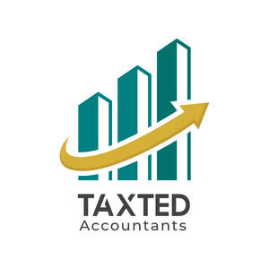

Trade Mark Journal No.2025/019 9 May 2025
UK00004191606 19 April 2025 (35)

- Class 35
- Consultancy relating to tax accounting; Accounting; Tax planning [accountancy]; Computerised tax assessments (preparation of -) [accounting]; Accounting services relating to tax planning; Tax consultancy [accountancy]; Tax advice [accountancy]; Tax consultations [accountancy]; Accounting consultancy relating to taxation; Book-keeping and accounting; Tax return advisory [accountancy] services; Tax filing services; Book-keeping and accounting services; Cost accounting; Tax preparation; Tax assessment [accounts] preparation; Preparation of income tax returns; Income tax returns (Preparation of -); Management accounting; Administrative accounting; Cost management accounting; Accountancy advice relating to the preparation of tax returns; Accounting services; Taxation [accountancy] consultancy; Taxation [accountancy] advice; Accountancy advice relating to tax preparation; Preparation of tax returns; Tax returns (Preparation of -); Tax preparation and consulting services; Preparation and completion of income tax returns; Tax assessment preparation; Taxation [accountancy] consultation; Computerised accounting; Accounting services for pension funds; Business accounting advisory services; Accounting, in particular book-keeping; Computerized accounting services; Preparation of tax declarations; Accounting advisory services; Computerised accounting (Preparation of -); Tax return preparation; Advisory services relating to tax preparation; Computerised accounting (Maintenance of -); Tax declaration procedure services; Accountancy advice relating to taxation; Business advice relating to accounting; Bookkeeping; Business auditing; Accounting services relating to costs for farming enterprises; Balance sheet accounting; Accounting services for mergers and acquisitions; Advice on tax preparation; Accountancy; Accountancy services relating to accounts receivable; Consulting and information concerning accounting; Payroll advisory services; Accountancy, book keeping and auditing; Consultancy and information services relating to accounting; Payroll preparation; Wage payroll preparation; Financial records management; Business accounts management; Sales account management; Computerised payroll preparation; Accountancy services; Bookkeeping for electronic funds transfer; Administration of business payroll for others; Payroll assistance; Payroll processing services [for others]; Data processing services in the field of payroll; Administration of employee pension plans; Employee record services; Administration of employee welfare benefit plans; Personnel management and employment consultancy; Business invoicing services; Preparation of payrolls [for others]; Outsourcing services in the field of business analytics; Secretarial employment agency services; Invoicing services; Invoicing; Business organization and management consultancy including personnel management; Business records management; Computerised business records keeping; Computerized database management services; Business file management; Preparation of accounts; Accounts (Preparation of -); Preparation of statements of accounts; Administration, billing and reconciliation of accounts on behalf of others; Drawing up statements of account; Provision of information relating to accounts [accountancy]; Provision of reports relating to accounting information; Business consulting; Business consulting for enterprises; Business planning and business continuity consulting; Business management; Consultancy regarding business organisation and business economics; Business organisation; Business marketing services; Business planning; Business marketing consultancy; Business administration; Business organization consulting; Business research; Business organisation consulting; Business consultancy to individuals; Business consulting services; Business analysis; Business management and consulting services.
TAXTED LTD